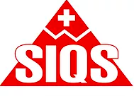

Biokon - 20 years of research and innovation in the field of safe tan
- In 1996, MSPA "Biokon" for the first time in the domestic market released a line of products for tanning
- In 2016, Biokon is a recognized leader in the domestic industry for safe tan. Products occupy a leading position on the shelves in the retail in the Ukraine and the countries of the Customs Union-Russia, Belarus, Kazakhstan.MSPA "Biokon" is a leader in the productio of its own Trademarks for Network Clients.The volume of production of sun protection products in 2015 exceeded 3.5 millions
- Biokon cooperates with the Institut de Recherche appliquee a la Formulation, L'Analyse et la Qualitique (France) the French center for skin research to create and improve tanning products
- Biokon uses combinations of UVB and UVA filters manufactured by ISP concerns (Switzerland), MERCK, BASF (Germany)
Biokon - a guarantee of quality and efficiency
- Formulas of sunscreens BIOKON are created by the doctors of Russia, Ukraine, France
- Sun-protection cosmetics Biokon is produced at a manufacturing facility that conforms to the pharmaceutical standard GMP, ISO: 9001, ISO: 22716 (at a productio stage)
- The protection factor SPF BIOKON is confirmed by the laboratory of ASHLAND Inc, USA
- Cosmetics Biokon received a certificate from the Institute of Quality Standards SIQS, Switzerland, 2010
- In 2013 Biokon received a European award for quality
Biokon - educational work with consumers
The company Biokon is actively working to develop a culture of safe tan from the population, primarly in the resorts of the Krasnodar territory